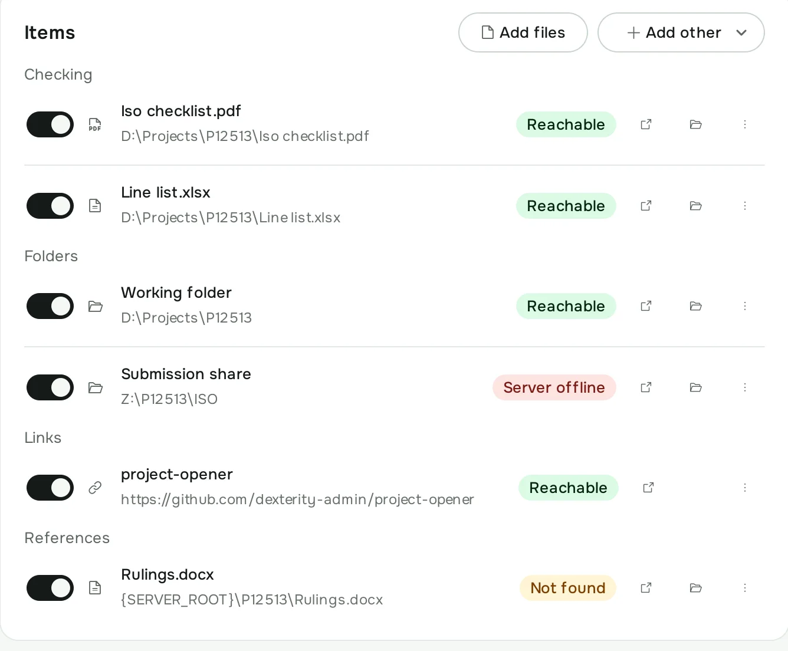
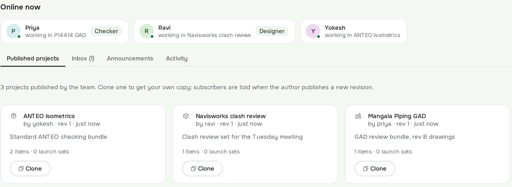
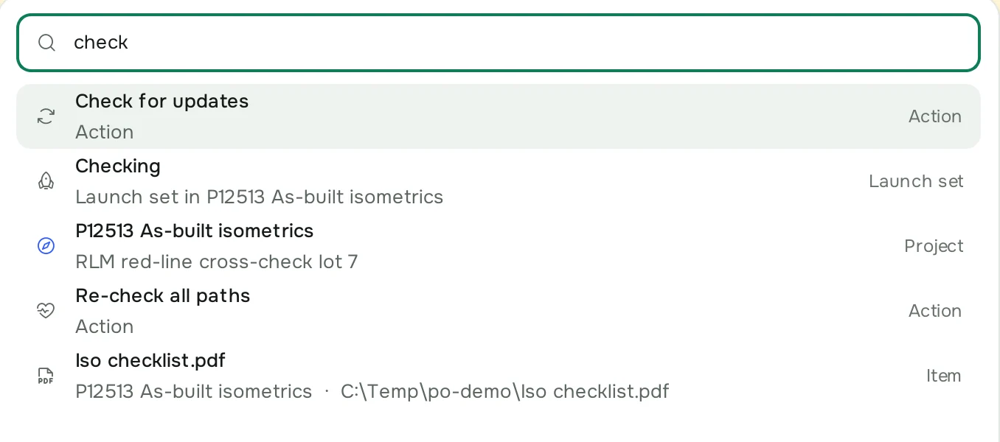
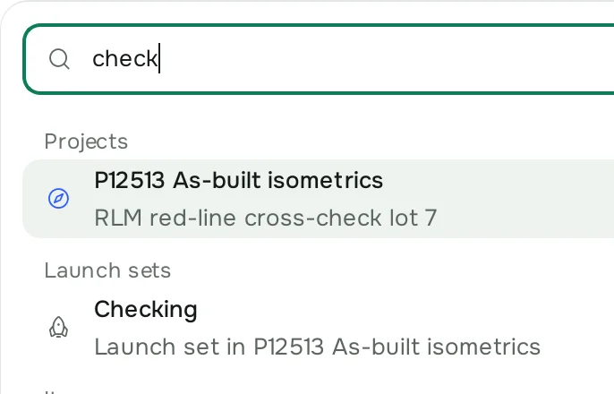
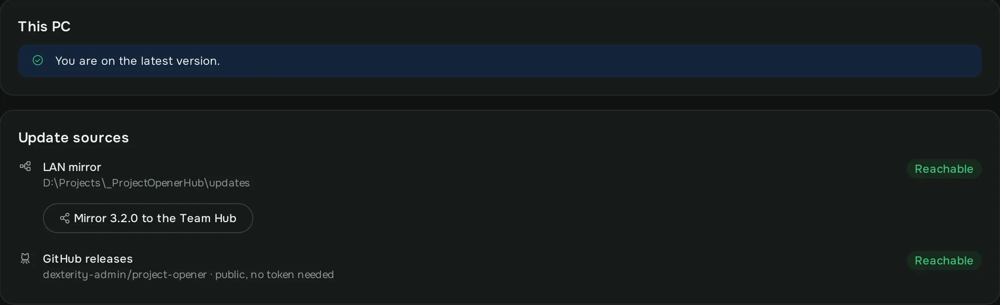

Your whole project.
One click.
Whole project.
One click.
A Windows desktop app for the Dexterity piping office. Every drawing, folder, link and tool a job needs, opened together.
The window is live: press Open on P12513.
Good afternoon, Vikram
3 paths need attention in 2 projects · 2 launches today
Quick launch
Opening P12513 As-built isometrics
6 items · FST · P12513- CheckingIso checklist.pdfD:\Projects\P12513\Iso checklist.pdfOpened
- CheckingLine list.xlsxD:\Projects\P12513\Line list.xlsxOpened
- FoldersWorking folderD:\Projects\P12513Opened
- FoldersSubmission share\\nas01\Project\P12513\ISOServer offline
- Linksproject-openerhttps://github.com/dexterity-admin/project-openerOpened
- ReferencesRulings.docx{SERVER_ROOT}\P12513\Rulings.docxNot found
4 opened · 2 skipped · 4.0 sLaunch sets Checking Submission pack
Z: on your desk. \\nas01 on Priya’s.
Z:\\\nas01\Project\P12513\ISO\Line list.xlsx
W:\\\nas01\Project\P12513\ISO
{SERVER_ROOT}\\\nas01\Project\P12513\Rulings.docx
A project is a list of paths, stored exactly as you typed them. Before anything opens, the app checks each one and names what it found.
- Reachable The file, folder or link answered. It opens.
- Server offline The share did not answer. The item is skipped and named in the sheet.
- Not found The path, or the variable behind it, is missing. Skipped and named too; nothing is guessed.
When you publish or send a project, this PC’s drive map turns Z: into \\nas01\Project. On Priya’s desk, {SERVER_ROOT} and {Z_DRIVE} are filled from her own path variables in Settings. Nothing in the saved project is rewritten.

The server is a folder
One shared folder. No server, no account, no internet.
See who is online. Publish a project; colleagues clone it and are offered each revision you publish afterwards. Send a project to a colleague’s inbox with a note. Post an announcement and it sits at the top of everyone’s Home.

Five letters. Enter.
Type part of a job number, a file or a command and press Enter. Projects, launch sets, items and actions in one list.
check


Updates arrive by themselves
From the office LAN first
The app looks at the hub’s mirror before it looks anywhere else, so the whole office updates without touching the internet. One admin mirrors a release once.
Then from GitHub
On a connected PC it checks the latest release, verifies the SHA-256 of the download, installs silently and relaunches. Settings and projects are untouched.

Install it.
Installs for the current user in %LOCALAPPDATA%\Programs\Project Opener on 64-bit Windows 10 or 11. No admin rights.
Adds a Start menu entry; the desktop shortcut and start-with-Windows are optional. Settings and projects survive updates and reinstalls.
Colleagues already on the office hub get each release over the LAN. Every release carries SHA256SUMS on GitHub.